ViralScope AI / video1
ViralScope AI
TikTok / 3c / logitech breakdown — for streamer: what's worth copying first, then where conversion stalls.
Key Frames
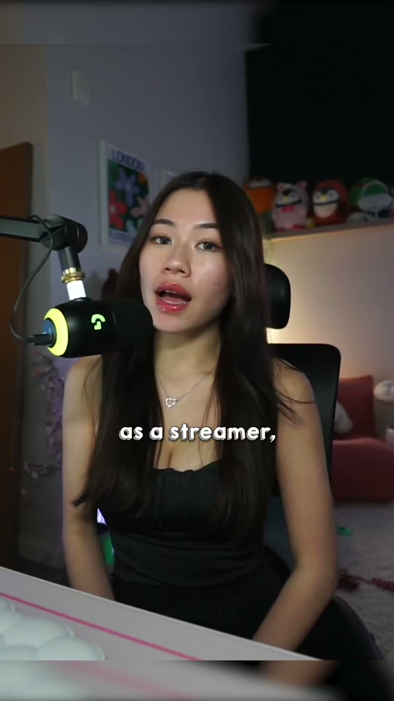
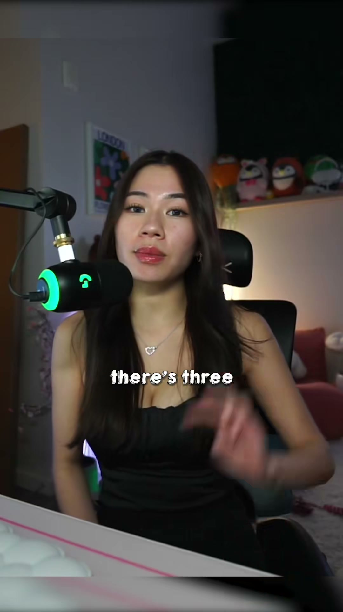
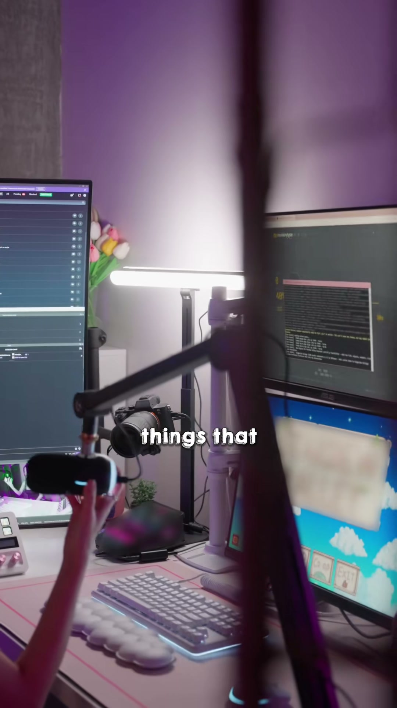
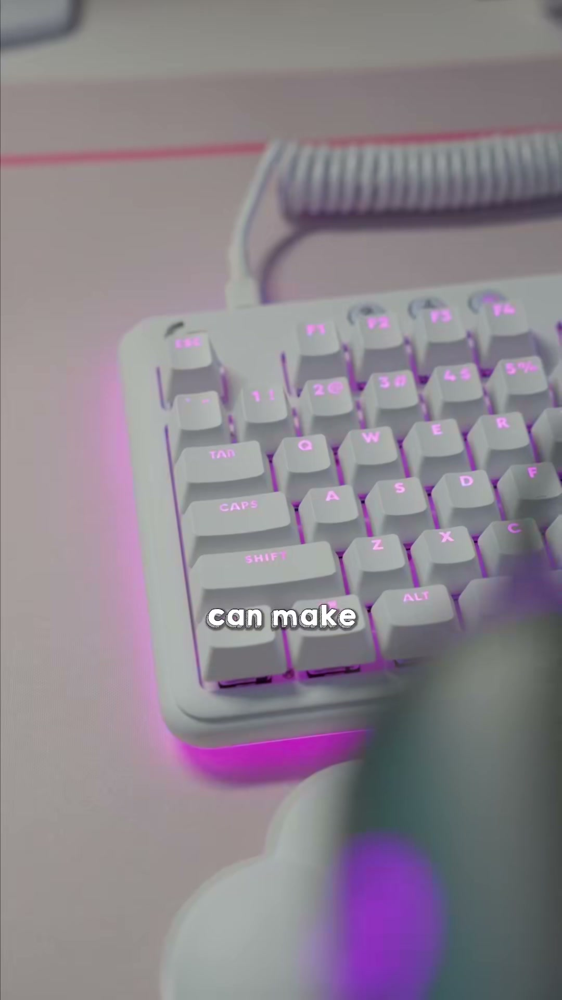
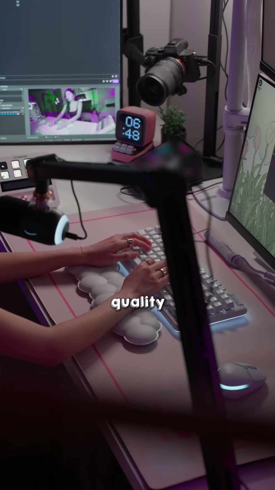
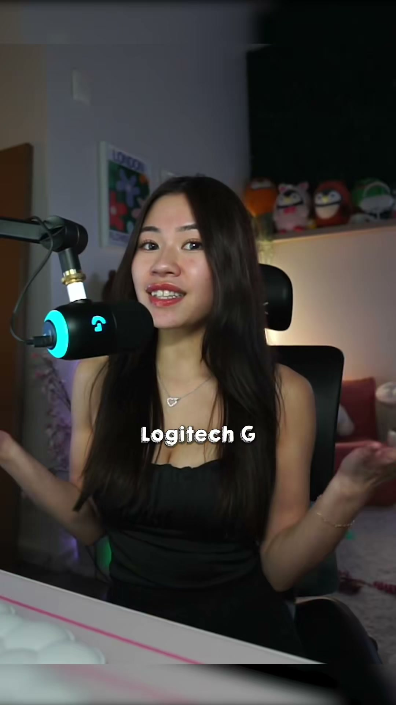
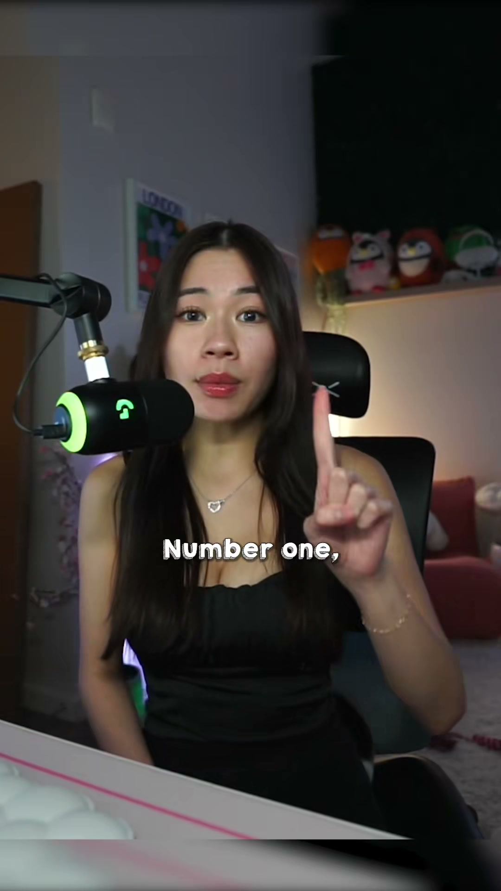
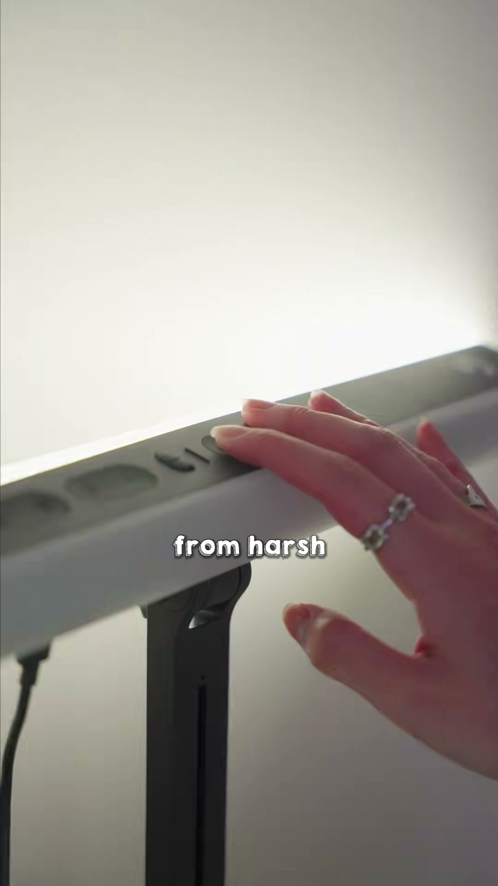
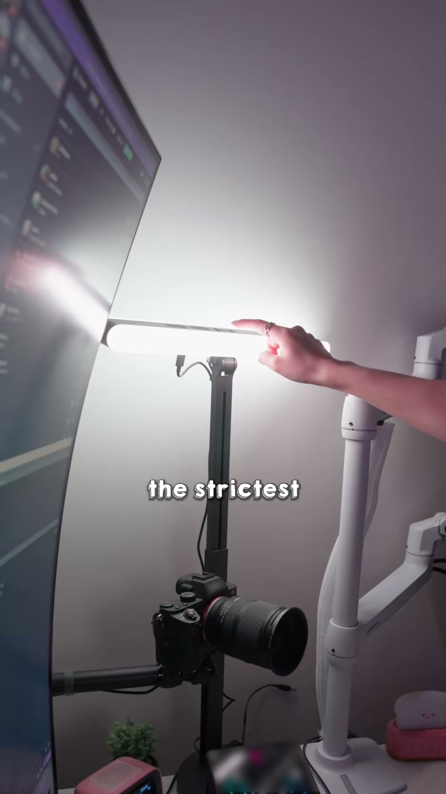
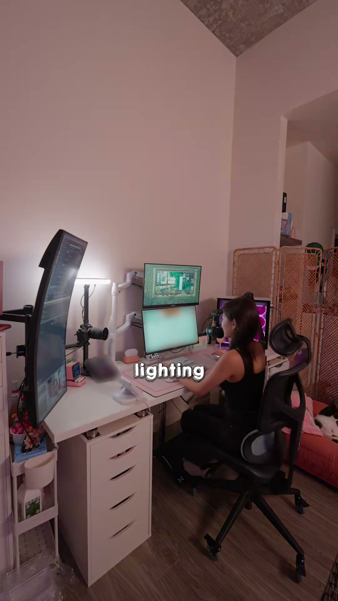
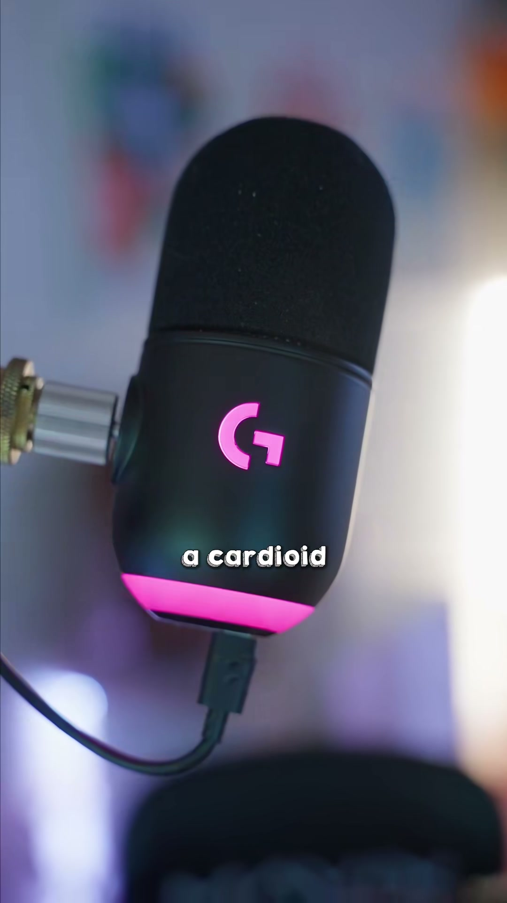
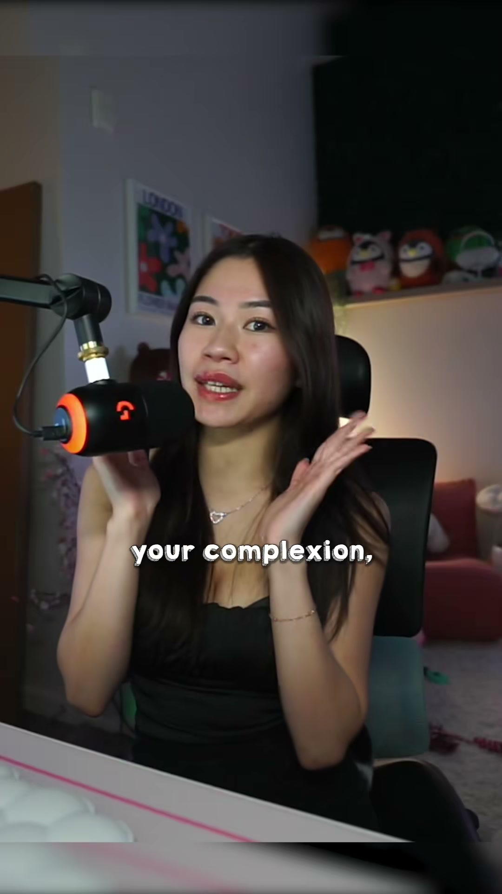
✅ What's Working — Repeatable
Repeatable Viral Formula
Reusable template structure
Template: “3 setup fixes for [target user]”
- 0.0s–0.8s: Audience callout + promise
- “If you’re a streamer, these 3 things decide whether your setup looks pro or not.”
- 0.8s–2.5s: Fast aesthetic proof montage
- Show desk, gear, lighting, screen, hands, mic, room vibe.
- 2.5s–5.0s: Credibility bridge
- “After testing a lot of setup gear, here’s what actually matters.”
- 5.0s–15.0s: Point 1 = biggest pain point
- Problem → product close-up → result on face/setup
- 15.0s–25.0s: Point 2 = sensory upgrade
- Sound, comfort, clarity, or background noise demo
- 25.0s–35.0s: Point 3 = ecosystem / convenience / personalization
- Show software, color control, sync, cleanup
- 35.0s–45.0s: Buying summary
- “If you care about X, get Y; if you care about Z, get A.”
- 45.0s-end: CTA
- “Links are in bio/shop,” or “I pinned the exact setup.”
Why this formula is repeatable
- It mixes education, aspiration, and product placement.
- It works for streamers, gamers, creators, editors, desk-setup audiences.
- It is modular: one product can fill one point, or multiple products can fill all 3.
---
Our Brand Version
Ready-to-shoot English script / shot list
Shot 1 — 0.0s–0.8s
- Visual: Creator on camera at desk, mic visible, light on.
- Line: “If you stream, these are the 3 things that instantly make your setup look and sound better.”
- On-screen text: 3 things that upgrade your stream
Shot 2 — 0.8s–2.0s
- Visual: Quick montage — desk wide shot, keyboard glow, mic close-up, monitor, creator sitting down.
- No extra line, keep upbeat music and captions.
Shot 3 — 2.0s–5.5s
- Visual: Close-up of harsh light / creator squinting, then cut to Litra Beam LX turning on.
- Line: “First: lighting. I hate harsh lights, especially on long streaming days.”
- On-screen text: Fix #1: softer lighting
Shot 4 — 5.5s–9.0s
- Visual: Finger adjusting light brightness/color, then face before/after in camera frame.
- Line: “This gives me a softer look without that harsh glare, and I can tune it warmer or cooler depending on my skin tone.”
- On-screen text: Adjust brightness + color temp
Shot 5 — 9.0s–13.0s
- Visual: Mic close-up, creator typing/talking, ambient keyboard noise in background.
- Line: “Second: audio. If your mic picks up everything around you, your stream feels messy fast.”
- On-screen text: Fix #2: cleaner audio
Shot 6 — 13.0s–17.0s
- Visual: Talk into mic, then show typing nearby; optionally use waveform overlay or text note.
- Line: “The Yeti GX is built for gaming and focuses on your voice while ignoring more of the noise around you.”
- On-screen text: Voice first, less peripheral noise
Shot 7 — 17.0s–22.0s
- Visual: G Hub software screen, changing light tone and mic RGB.
- Line: “Third: your ecosystem. I like having everything in one place instead of managing separate gear with separate apps.”
- On-screen text: Fix #3: one setup ecosystem
Shot 8 — 22.0s–27.0s
- Visual: Split shots of light color change, mic RGB change, full desk reveal.
- Line: “With G Hub, I can tune the light and customize the mic look so the whole setup feels clean and consistent.”
- On-screen text: Synced look, simpler control
Shot 9 — 27.0s–32.0s
- Visual: Final aesthetic wide shot with creator streaming.
- Line: “If you care about looking better on camera and sounding cleaner live, these are the 2 pieces I’d start with.”
- On-screen text: Litra Beam LX + Yeti GX
Shot 10 — 32.0s–35.0s
- Visual: Product beauty close-ups.
- Line: “I pinned the exact setup if you want to copy it.”
- On-screen text: Setup linked / pinned
---
⚠️ What to Fix
Conversion Diagnosis · Priority Actions
- Add hard product proof, not just claims. The biggest blocker is lack of decision-making evidence: show a real before/after lighting test, audio noise rejection comparison, or side-by-side result so viewers can instantly understand why these products are worth buying.
- Make the recommendation more transactional in the second half. Keep the same strong hook and aesthetic shell, but each product section should end with a clear buyer takeaway like who it’s for, what problem it solves, and why this choice beats a generic alternative.
- Use an explicit shopping CTA in both video and caption. With zero orders, the content likely never created a strong next step. Add a direct close such as “I linked the exact setup,” “start with this if your room is noisy,” or “get this if harsh lighting gives you headaches” so viewers know what to click and why.
Creator Feedback
Your video did a great job grabbing attention — the setup looks polished, your creator identity fits the product naturally, and the content feels very native for streamer/desk setup audiences. That part is working.
Where we need to improve is conversion. Right now, people are watching for inspiration and setup vibes, but not getting enough proof to make a purchase decision. For the next version, keep the same clean aesthetic and audience-specific hook, but add one real before/after demo for the light, one clear sound test for the mic, and a stronger ending that tells viewers exactly which product to buy for which problem. Also, make the CTA more direct in the video and caption, like linking the exact setup or naming who should start with each item.